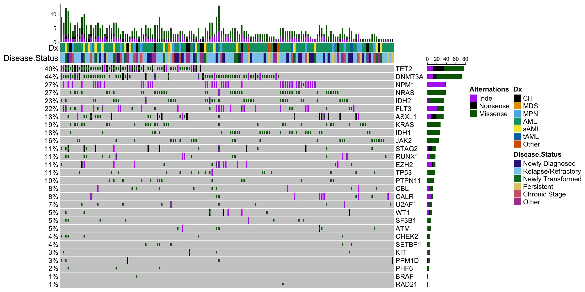

4.2 Oncoprint: Figure 1A
Now we are going to make the oncoprint that is in Figure 1A. Check out this example from the ComplexHeatmap package for a better understanding of why things are formatted the way they are.
library(pals) # great package with color palettes in R
library(ComplexHeatmap) #used for making the oncoprint
#Here we will identify whether a variant is an indel, Nonsense or Missense mutation
#Next we group samples together and pivot the matrix into wide format
fill_values <-setNames(as.list(rep(0,length(levels(final_mut_melt$Gene)))),levels(final_mut_melt$Gene))
mut_mat_wide<-final_mut_melt%>%
mutate(Variant_Class=ifelse(grepl("fs\\*|INS_|ins|ext|del",.$Mutation),"Indel",
ifelse(grepl("\\*$",.$Mutation),"Nonsense","Missense")))%>%
mutate_at(c("Gene","Variant_Class","Sample"),as.character())%>%
group_by(Sample)%>%
pivot_wider(id_cols=Sample,
names_from = Gene,
values_from = Variant_Class,
values_fn = list(Variant_Class =list),
values_fill = list(Variant_Class = " ")) %>%
ungroup(Sample)%>%data.frame()
# At this point, each column is actually a list, and variants are represnted as a list within a list.
# So we want to unpack it a bit, and turn those variant lists in a ; separated vector
mut_mat_wide_storage <- list()
for(i in 2:ncol(mut_mat_wide)){ # start at 2 to ignore the first column of sample names
mut_mat_wide_storage[[i]]<- do.call(rbind,lapply(mut_mat_wide[,i],function(x){
if(x==" "){
return(x)
} else{
paste(x,sep=";",collapse=";")
}
}
))
}
## The rest of this just turns this back into a matrix in the format suggested by ComplexHeatmap
mut_mat_wide_storage[[1]] <- as.character(mut_mat_wide[,"Sample"])
final_mat <- do.call(cbind,mut_mat_wide_storage)
colnames(final_mat) <- colnames(mut_mat_wide)
rownames(final_mat) <- final_mat[,1]
final_mat <- t(final_mat[,-1])
#Now we set up the color schemes for the variants on each row
variant_type_colors = c("Indel" = "darkorchid2", "Nonsense" = "black", "Missense" = "darkgreen")
alter_functions = list(
background = function(x, y, w, h) {
grid.rect(x, y, w, h-unit(0.25, "mm"),
gp = gpar(fill = "#CCCCCC", col = NA))
},
Indel = function(x, y, w, h) {
grid.rect(x, y, w-unit(0.5, "mm"), h-unit(0.5, "mm"),
gp = gpar(fill = variant_type_colors["Indel"], col = NA))
},
Nonsense = function(x, y, w, h) {
grid.rect(x, y, w-unit(0.5, "mm"), h-unit(0.5, "mm"),
gp = gpar(fill = variant_type_colors["Nonsense"], col = NA))
},
Missense = function(x, y, w, h) {
grid.rect(x, y, w-unit(0.5, "mm"), h*0.33,
gp = gpar(fill = variant_type_colors["Missense"], col = NA))
}
)
# Establish colors for each disease state and diagnosis
color_set <- list("Dx" = setNames(okabe(n=length(unique(as.character(pheno[,"Dx"])))),
c( "CH","MDS","MPN", "AML", "sAML" ,"tAML","Other") ),
"Disease.Status" = setNames(tol(n=(length(unique(as.character(pheno[,"Disease.Status"]))))),
c("Newly Diagnosed","Relapse/Refractory","Newly Transformed",
"Persistent","Chronic Stage", "Other")))
# Format the annotations at the top of the oncoprint
top_annotation <- HeatmapAnnotation(cbar = anno_oncoprint_barplot(),
df = pheno[,c("Dx","Disease.Status")],
col = color_set,
annotation_name_side = "left")
# Indicate what should be included in the legend
heatmap_legend_param <- list(title = "Alternations",
at = c("Indel", "Nonsense", "Missense"),
labels = c("Indel", "Nonsense", "Missense"))
# Make the oncoprint
oncoPrint(final_mat,
alter_fun = alter_functions,
col = variant_type_colors,
top_annotation = top_annotation,
heatmap_legend_param = heatmap_legend_param)